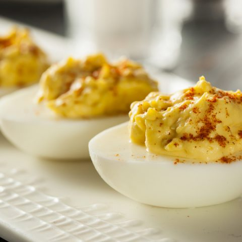

Deviled Eggs

No holiday is complete without Deviled Eggs, and now they can be yours anytime of the year. This classic appetizer is simple, yet addicting. The following Directions
will make twelve eggs, but that will barely be enough for one person.
Ingredients:
- 6 Eggs
- 1/4 Cup of mayonnaise
- 2 tsp of dijon mustard
- 1 tsp of vinegar
- salt and pepper to taste
- Paprika
Directions:
- Hardboil the eggs and peel when cooled.
- While eggs are boiling, mix together mayo, mustard, and vinegar.
- Slice eggs in half, remove yolks, and add to remaining ingredients.
- With an electric mixer, blend yolks with the rest of the ingredients until the mixture is smooth.
- Sample the mixture, and add salt and pepper as needed.
- Use a spoon or a piping bag to scoop the mixture back into the egg halves.
- Garnish with paparika.